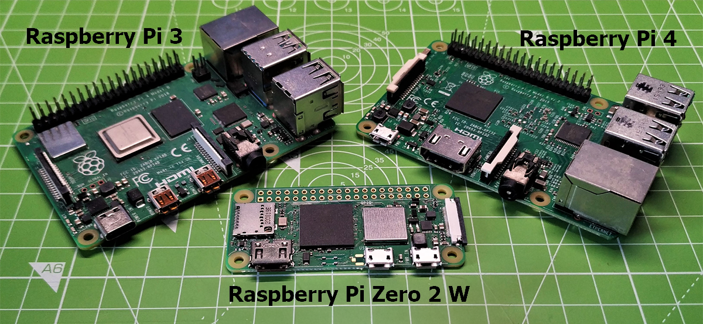

Raspberry Pi Setup Guide¶
Versions | Image Creation | Alpaca Installation | Optional GPS | Setup.sh Reference | Troubleshooting
Overview¶

Raspberry Pi are small, low-cost computers that can run the Alpaca Driver without needing a full Windows or Mac laptop attached to your telescope setup. They can be a great solution for a low-powered, light-weight, and portable Alpaca Driver with the Benro Polaris.
You don't need any programming experience to follow this guide. Everything is done by copying pre-written commands into a terminal window and pressing Enter. Just follow the steps in order. Where a step is optional or only needed if something goes wrong, that's called out clearly.
Which Pi should I buy?¶
Most Raspberry Pi models with networking support will work. Avoid Pico boards and the original Raspberry Pi Zero. The Alpaca Driver has been validated on the following platforms:
- Raspberry Pi Zero 2 W / WH running Raspbian Pi OS Lite (64-bit) - Debian Trixie
- Raspberry Pi 4 (8 GB) running Raspberry Pi OS (64-bit) - Debian Trixie
For reference, when running advanced motion control algorithms and tracking a sidereal target, the Alpaca Driver uses roughly 22% of the CPU and 26% of the available memory on a Raspberry Pi Zero 2 W. This is comfortably within what even the cheapest Pi model can handle. The technical output below is just supporting evidence for that claim; you don't need to understand it.
(.venv) pi@alpaca:~/alpaca-benro-polaris $ top
top - 22:38:21 up 8:03, 2 users, load average: 0.42, 0.46, 0.46
Tasks: 150 total, 2 running, 148 sleeping, 0 stopped, 0 zombie
%Cpu(s): 5.2 us, 0.6 sy, 0.0 ni, 95.6 id, 0.0 wa, 0.0 hi, 0.1 si, 0.0 st
MiB Mem : 416.1 total, 94.8 free, 204.8 used, 170.8 buff/cache
MiB Swap: 416.0 total, 387.1 free, 28.9 used. 211.3 avail Mem
PID USER PR NI VIRT RES SHR S %CPU %MEM TIME+ COMMAND
1942 root 20 0 608352 113132 41640 R 22.4 26.5 8:33.13 python3
Install the Raspberry Pi OS Lite Image¶
- Download the Raspberry Pi Imager from the official website
- Open the downloaded exe file to install the Imaging program on your PC, following it's installation instructions. Choose to run the program at the end of installation.
- Using the Imaging program
- Select your Raspberry Pi Device eg Raspberry Pi Zero 2 W, then click NEXT
- Choose your Operating System as Raspberry Pi OS (64-bit), then click NEXT. If you are using a Raspberry Pi Zero 2 W, then choose a "Lite OS" (you control it remotely rather than needing a mouse and Desktop). Select Raspberry Pi OS (other), then choose Raspberry Pi OS Lite (64-bit), then click NEXT
- Select your Storage Device that will hold the OS, then click NEXT > Do not format the SD card with FAT32, as Windows may automatically mount and lock it, preventing the imaging program from writing to the card. Instead, use Disk Management to carefully delete any existing partitions on the SD card before proceeding.
- Enter the device hostname eg alpaca, then click NEXT
- Choose your localisation settings, then click NEXT
- Choose your user name eg pi and a password, then click NEXT. Remember this for step 6 below.
- Choose your local wifi network you want the Raspberry Pi to connect to, then click NEXT
- Enable SSH. Use default password authtication, then click NEXT
- Use default disabled Raspberry Pi Connect, then click NEXT
- Write the image to the SD Card, click WRITE
- Remove the SD Card storage device and insert it into your Raspberry Pi
Install the Pi n Stars OS Image¶
PINS is a Linux-focused fork of N.I.N.A. aimed at image acquisition on compact systems, including Raspberry Pi. PINS is for users who want to experiment with a more portable, lower-power field computer.
- Download the Raspberry Pi Imager from the official website
- Download the PINS OS Image from the Touch-N-Stars website by clicking the `Download PINS button.
- Using the Imaging program
- Select your Raspberry Pi Device eg Raspberry Pi 4, then click NEXT
- Choose your Operating System as Custom, then click NEXT.
- Select the PINS OS Image you downloaded above, then click NEXT
- Select your Storage Device that will hold the OS, then click NEXT > Do not format the SD card with FAT32, as Windows may automatically mount and lock it, preventing the imaging program from writing to the card. Instead, use Disk Management to carefully delete any existing partitions on the SD card before proceeding.
- Write the image to the SD Card, click WRITE
- Remove the SD Card storage device and insert it into your Raspberry Pi
- Power on the Raspberry Pi and let it powerup and advertise its network
- Join the
pins-xxxxxnetwork, by clicking Connect, then choose 'Connect using a password instead', then entertouchnstars -
On your PC, open a Command Prompt or Powershell Window and connect to the Raspberry Pi with the following command. Replacing
pins-xxxxxwith the network name. The default pi user password is pins. -
Add your home network to PINS. Enter the following command replacing YourSSID and YourPassword with your home network settings.
-
Switch PINS to your home network.
-
Reconnect to PINS via your home network.
-
Continue with steps 3-7 below to Install Pre-Requisites and the Alpaca Driver onto the PINS Pi
- Install Touch n Stars on your mobile device.
- Connect Thouch n Stars to your PINS Pi and follow its setup steps.
- You may need to rebook PINS after you change country and local.
- Change Max Slew Speed to 9 °/s
- On the Equipment tab
- Refresh the Mounts then select the Alapca Driver from the dropdown
- Refresh the Rotators then select the Alpaca Driver from the dropdown
Install Pre-Requisites and the Alpaca Driver¶
These instructions assume a fresh install of Raspberry Pi OS Lite, written using the Raspberry Pi Imager.
-
Prepare the Raspberry Pi Zero 2W hardware. Connect the middle MicroUSB Port to a TPLink USB Wifi Adapter using a Micro-USB to USB-A (female) cable. Connect the outer MicroUSB port to a power source, using a Micro-USB to USB-C cable, and wait for it to power up.
-
On your PC, open a Command Prompt or Powershell Window and connect to the Raspberry Pi with the following command. If you used your own
usernameandhostnamein the image above then replacepi@alpacawith yourusername@hostname. Enter your username'spasswordwhen prompted. Oncesshconnects, any commands you enter will run on the Raspberry Pi. -
On the Raspberry Pi, download the Alpaca Driver setup.sh script. This is a program that automatically installs everything the Alpaca Driver needs, so you don't have to do it by hand.
-
Make the script runnable, then run it.
Note that if you want to install a specific version of the Alpaca Driver, you can pass the Git-Hub Branch name as the first argument to setup.sh. For example, the following command will fetch the dev2_2 branch. -
The setup script will download and install all the software needed for the Alpaca Driver, setting it up to automatically start whenever the Raspberry Pi is powered on. It will also setup the Bluetooth and Wifi network of the Raspberry Pi.
Wifi Mode Description Alpaca Station Mode (wlan0, STA) By default the Raspberry Pi will attempt to join to an existing wireless network or router. This may be your home network or a travel router. Alpaca Hotspot Mode (wlan0, AP) As a fallback, if it cannot join in Station Mode, the Raspberry Pi will act as its own hotspot with an SSID called alpaca-hotspotand subnet10.42.0.xby default. This allows other devices to join to it directly to access Alpaca Pilot and the Alpaca Rest API. This is useful at a dark site where you may not have any internet connection.Polaris Hotspot (wlan1) The Raspberry Pi will attempt to use the TPLink USB Wifi Adapter (wlan1) to join the Polaris Hotspot with SSID polaris_xxxxxx. This is used by the driver to communicate with the Polaris.The setup script will first ask you to set a password for the fallback Alpaca Hotspot — press Enter to accept the suggested default, or type your own (must be at least 8 characters). The script then works through a series of setup tasks automatically, each printed as a line starting with
==SETUP==. This can take a few minutes, especially the first time. When it's done, you'll see a box confirming the setup is complete.The Alpaca Driver should now be installed and running.
-
Start Alpaca Pilot
To open Alpaca Pilot, open a web browser on any device connected to the same Wi-Fi network as the Raspberry Pi, and go to:
The
:8080part is required. Leaving it off will fail to load the page, even though other things (likeping) might still work. For security reasons, Linux restricts the standard web address ports (80 and 443) to programs with administrator privileges. Since the Alpaca Driver deliberately doesn't run with those extra privileges, it needs to use different port numbers instead. That's why you always go tohttp://ap.local:8080rather than plainhttp://ap.local. -
Join the Polaris network
To request the Alpaca Driver to join the Polaris network
- Using Alpaca Pilot, navigate to the Connect page.
- Power on the Polaris and Wait for it to appear in the device list (found automatically over Bluetooth).
- Click the Wi-Fi button to request the Raspberry Pi to join the Polaris' own Wi-Fi network.
- Follow the remaining setps on the Connect page.
Once you have completed compass and single star alignment, the Polaris should be ready to use.
Optional GPS Receiver¶
Alpaca Pilot's Locate button uses the browser's location by default, which needs internet and is often only approximate. At a dark site, a USB GPS receiver plugged into the Pi gives the observing site's latitude, longitude and elevation instead, with no internet needed. How to use it in Pilot is described in Set Observing Site Location; the notes below are specific to the Pi.
Connecting the receiver¶
- Pi Zero 2 W: plug the receiver into the micro-USB port marked USB with an OTG adapter (not the PWR port). Other Pis: any USB port.
- Plug it directly into the Pi. A cheap USB hub, and cameras or USB 3 cables close by, can block the GPS signal completely. In testing, a receiver that got a fix plugged directly into the computer never got one through a hub shared with a guide camera.
- u-blox receivers appear as
/dev/ttyACM0, and receivers using a CH340 USB-serial chip as/dev/ttyUSB0. To check, runls /dev/ttyACM* /dev/ttyUSB*. - The Pi user running the driver must be in the
dialoutgroup to read the receiver. The defaultpiuser already is. To check, rungroups.
USB / Serial (NMEA) (recommended)¶
The driver reads the receiver directly. Nothing extra needs to be installed.
- In Pilot Settings, click the arrow beside Locate and choose Use GPS Receiver.
- Leave Connection to GPS Receiver as USB / Serial (NMEA), and choose the Serial Port. GPS receivers are marked in the list, and if only one is plugged in it is chosen for you.
- Leave Baud Rate at
9600unless your receiver's documentation says otherwise. u-blox receivers ignore it. - Click OK, then Locate (GPS).
GPS Daemon (GPSD) (optional)¶
GPSD is a Linux service that shares a GPS receiver between programs, for example with KStars/Ekos, or to keep the Pi's clock on GPS time. Use it only if you need that: while GPSD is running it holds the receiver, so choose GPS Daemon (GPSD) in Pilot rather than USB / Serial.
-
Install gpsd and its status client:
The-goption adds the gpsd packages to setup's package installation; it does not select GPSD in Alpaca Pilot. -
Configure gpsd to use the receiver. Find its stable USB path with
ls -l /dev/serial/by-id/, then set it in/etc/default/gpsd, for example: -
Start gpsd and confirm the receiver has a fix:
Exitcgpswith Ctrl+C after confirming it reports a fix. -
In Pilot Settings, click the arrow beside Locate, choose Use GPS Receiver, and set Connection to GPS Receiver to GPS Daemon (GPSD). The defaults (host
127.0.0.1, port2947) are correct when gpsd runs on the Pi itself. Click OK, then Locate (GPS).
Setup.sh Command Reference¶
You won't normally need any of these options — running ./setup.sh on its own (as in step 8 above) is enough for most people. They're here for reference if you want to customise something. Running ./setup.sh -h on your own Pi always shows the same thing, straight from the script itself:
Usage: setup.sh [-n sta_ssid] [-w sta_password] [-a ap_ssid] [-p ap_password] [-g] [-h] [branch]
Options:
-n <ssid> Defines the network SSID for the Alpaca Station Mode Wifi connection.
Normally only needed to add *additional* known networks to automatically join.
(default:the network SSID defined in the freshly-imaged Pi).
-w <password> Password for the network named by -n (only used when creating it).
-a <ssid> Defines the network SSID for the Alpaca Hotspot Fallback connection on wlan0.
Only used when no known STA network is in range, e.g. at a dark site.
(default: keep the existing fallback name on a re-run, otherwise ${AP_SSID})
-p <password> Password for the network named by -a, min 8 chars for WPA2.
(default: keep the existing password on a re-run, otherwise prompted interactively,
or '${DEFAULT_AP_PASSWORD}' if not running in a terminal)
-g Install gpsd and gpsd-clients for optional GPS receivers.
-h Print this help and exit.
branch Git branch to install, as a plain trailing argument.
(default: stay on the branch of an existing install, otherwise ${BRANCH})
./setup.sh on a Pi that's already set up — it won't undo anything, it just re-applies (or updates) whatever you tell it. For example, to add a second Wi-Fi network and change the dark-site hotspot's name and password in one go:
Monitoring and Diagnostic commands¶
The Alpaca Driver runs automatically in the background (even after a reboot) as what Linux calls a "service" — you don't need to start it by hand. The commands below let you check on it or restart it if needed.
To check on or control the Alpaca Driver:
```Bash
sudo systemctl status polaris-driver # Check whether it's running
sudo systemctl stop polaris-driver # Stop it
sudo systemctl start polaris-driver # Start it again
journalctl -u polaris-driver -f # Watch its log messages live (Ctrl+C to stop watching)
```
Troubleshooting the Raspberry Pi¶
The sections below (labelled P1, P2, etc.) cover specific problems people have run into. You shouldn't need any of them for a normal install — skip straight past this section unless something's actually gone wrong, and jump to whichever entry best matches what you're seeing.
P1 - Diagnosing Wifi and Bluetooth Network Issues¶
Normally, connecting to the Polaris is fully automatic (see step 9 above): Bluetooth is used briefly just to find the Polaris and turn on its Wi-Fi, then the Pi joins that Wi-Fi network by itself. This section is for when that doesn't work.
If Bluetooth won't turn on at all (you'll see a message like Bluetooth unavailable in the Driver's logs):
sudo apt install rfkill # a small tool for checking wireless on/off switches, if not already installed
rfkill list # shows if Bluetooth or Wifi is switched off in software
sudo rfkill unblock bluetooth
sudo hciconfig hci0 up
If the Pi can't see or join the Polaris' Wi-Fi network at all: the Raspberry Pi's own built-in Wi-Fi often can't connect to the kind of Wi-Fi network the Polaris creates. A small USB Wi-Fi adapter plugged into the Pi (we've tested the TP-Link Archer T2U PLUS) fixes this. Plug it into the port labelled USB — not PWR IN, which is power-only and won't work. It should be recognised automatically with no extra setup. To check:
lsusb # confirm the adapter shows up in this list at all
ip link show # look for a new network interface, e.g. wlan1, alongside the existing wlan0
lsusb shows the adapter but no new network interface (like wlan1) appears, your Pi's software is too old to recognise it automatically. Building the missing piece yourself is possible but technical — see aircrack-ng/rtl8812au if you want to attempt it, or ask for help.
To check whether the Polaris' Wi-Fi network is currently visible:
sudo apt install iw # a small Wifi tool, if not already installed
sudo iw wlan1 scan | grep SSID # look for a name starting with "polaris_"
wlan1 if it's different.)
To manually join the Polaris' network — this is the exact same thing the Wi-Fi button in Alpaca Pilot does; running it yourself here just shows you more detail if something's going wrong. It's safe to run more than once.
cd ~/alpaca-benro-polaris
.venv/bin/python3 driver/join_wifi.py polaris_b83c06 # replace with your Polaris' actual name, found by scanning above
sudo nmcli connection up alpaca-hotspot-fallback ifname wlan0 # forces wlan0 into the fallback hotspot manually
To check the current connection status:
nmcli -t -f DEVICE,STATE,CONNECTION device status # is wlan1 connected to something starting with "polaris"?
ip addr show wlan1 # confirm it has an address (192.168.0.100 by default)
ping 192.168.0.1 # confirm the Pi can actually reach the Polaris
journalctl -u NetworkManager -f # NetworkManager logs
P2 - Diagnosing Wifi Connections¶
These commands show more detail about the Pi's network connections generally, useful if P1 above didn't solve things. ip a lists every network connection the Pi has and the address each one was given — look for wlan0 (built-in Wifi, should show your home network's address) and wlan1 (the USB adapter, should show 192.168.0.100 when connected to the Polaris):
$ ip a
1: lo: <LOOPBACK,UP,LOWER_UP> mtu 65536 qdisc noqueue state UNKNOWN group default qlen 1000
link/loopback 00:00:00:00:00:00 brd 00:00:00:00:00:00
inet 127.0.0.1/8 scope host lo
valid_lft forever preferred_lft forever
inet6 ::1/128 scope host noprefixroute
valid_lft forever preferred_lft forever
2: wlan0: <BROADCAST,MULTICAST,UP,LOWER_UP> mtu 1500 qdisc fq_codel state UP group default qlen 1000
link/ether aa:bb:cc:11:22:33 brd ff:ff:ff:ff:ff:ff
inet 192.168.50.160/24 brd 192.168.50.255 scope global dynamic noprefixroute wlan0
valid_lft 49228sec preferred_lft 49228sec
inet6 fe80::a8bb:ccff:fe11:2233/64 scope link proto kernel_ll
valid_lft forever preferred_lft forever
3: wlan1: <BROADCAST,MULTICAST,UP,LOWER_UP> mtu 2312 qdisc mq state UP group default qlen 1000
link/ether aa:bb:cc:44:55:66 brd ff:ff:ff:ff:ff:ff
inet 192.168.0.100/24 scope global wlan1
valid_lft forever preferred_lft forever
$ iw dev wlan0 link
SSID: YourHomeNetwork
freq: 2432.0
RX: 52687490 bytes (340502 packets)
TX: 55221927 bytes (349678 packets)
signal: -28 dBm
rx bitrate: 72.2 MBit/s
tx bitrate: 72.2 MBit/s
bss flags: short-slot-time
dtim period: 1
beacon int: 100
$ iw dev wlan1 link
Connected to aa:bb:cc:77:88:99 (on wlan1)
SSID: polaris_b83c06
freq: 2452.0
signal: -24 dBm
tx bitrate: 72.2 MBit/s
bss flags: short-slot-time
dtim period: 0
beacon int: 15
$ ip route
default via 192.168.50.1 dev wlan0 proto dhcp src 192.168.50.160 metric 600
192.168.0.0/24 dev wlan1 proto kernel scope link src 192.168.0.100
192.168.50.0/24 dev wlan0 proto kernel scope link src 192.168.50.160 metric 600
$ sudo iw wlan1 scan | grep SSID
SSID: polaris_b83c06
SSID: YourHomeNetwork
SSID: YourHomeNetwork
SSID: NeighboursNetwork_5GHz
P3 - Adding an additional home/site Wifi network¶
By default, the Pi remembers one Wi-Fi network (whatever you set up in the Raspberry Pi Imager) and falls back to its own hotspot when that's not in range (see step 9 above). If you'd like it to also recognise a second network — for example, a different location you regularly visit that does have Wi-Fi — re-run the setup script and tell it about the new network:
cd ~/alpaca-benro-polaris/platforms/raspberry_pi
./setup.sh -n "OtherNetworkName" -w "OtherNetworkPassword"
If you'd rather do this by hand instead of re-running the script, here's the equivalent directly:
sudo nmcli connection add type wifi ifname wlan0 con-name "OtherNetworkName" ssid "OtherNetworkName"
sudo nmcli connection modify "OtherNetworkName" wifi-sec.key-mgmt wpa-psk wifi-sec.psk "OtherNetworkPassword"
sudo nmcli connection modify "OtherNetworkName" connection.interface-name wlan0 connection.autoconnect-priority 10
P4 - Raspberry Pi Station Mode connection keeps dropping¶
The Raspberry Pi Zero 2 W has been known to have problems with some home mesh Wi-Fi systems (multiple access points sharing one network name). Some routers include a feature often called "Roaming Assistant," "Smart Connect," or "Band Steering." This disconnects a device it judges to have a weak signal, hoping it reconnects to a closer access point. The Raspberry Pi may not handle this well and get bumped repeatedly, even when their signal is actually strong.
To resolve this issue:
- This is a router-side setting. No change is needed on the Raspberry Pi itself.
- In your router/mesh app's Wi-Fi settings, find "Roaming Assistant" / "Smart Connect" / "Band Steering" and disable it.